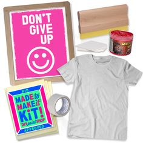
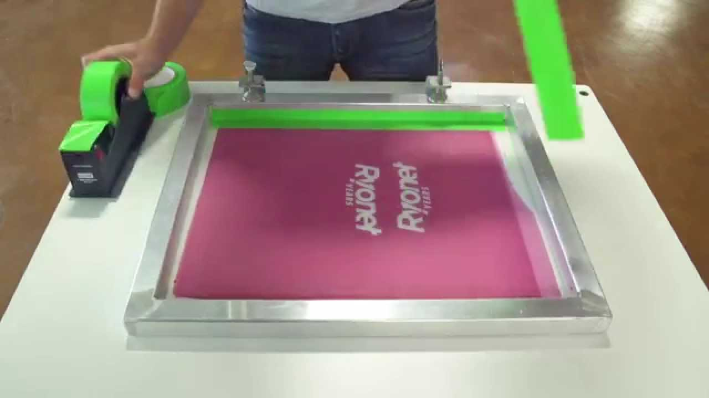
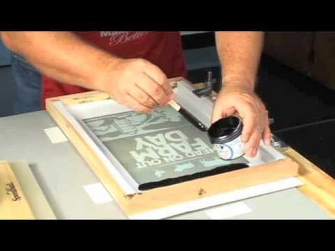
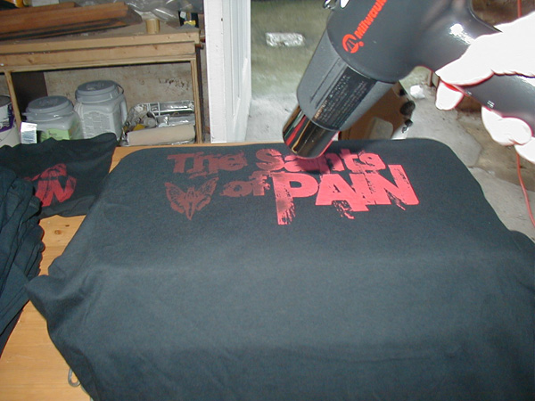
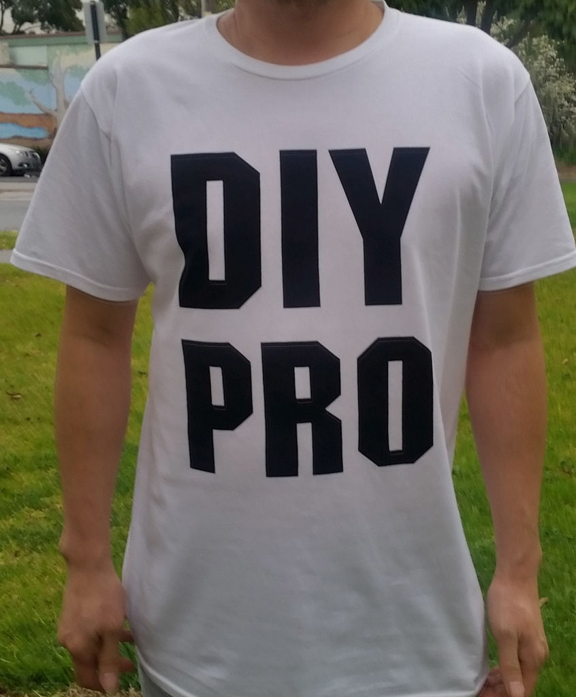

DIY Screen Printing
Supplies

- Diy Kits are best and avalible online:BUY HERE
- 1 pre-burned screen 200 mesh count
- Ink: I prefer water based inks
- 1 squeegie
- 1 heat gun
- 1 Blank T-Shirt
- 1 roll of blue painters tape
Step 1:Tape the Screen

Using your painters tape, tape off all the edges of your pre-burned screen.
Step 2: Load Ink Into the Screen

Now use eiter a paint wond or wooden spoon and load up the taped screen with your ink!
Step 3:Place the Shirt for Screenprinting

Before you print onto the blank shirt you must first place it and align it to the screen.
It is recomeneded to use spray adhesive to keep the shirt flat and from moving.
Step 4: Print!

With squeegie in hand, ink in the screen and shirt placed perfectly its time to print.
You can either pull the ink towards you or push away as long as you cover the screen your in good shape!
Step 5: Drying the Ink!

Now that we have our design on the shirt, the fresh ink needs to be cured to stay permanently on the shirt.
We do this with a heat gun, holding it aprox 6 to 8 inches from the shirt for 28 to 38 seconds. Now feel the design
if it feels dry then your good to wear it! If its still a little wet then repeat this step.
Final Step: Wear your Shirt!
